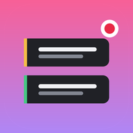

AI Live Producer
틱톡 LIVE 크리에이터와 에이전시를 위한 Windows용 방송 기록·분석 프로그램
무엇을 하나요
방송 기록내 방송의 채팅·선물·입장 흐름을 PC 화면에서 읽어 시간순으로 남깁니다.
방송 후 리포트선물이 몰린 순간, 자주 오는 시청자, 다음 방송 제안을 한눈에 보여 줍니다.
틱톡 공식 연결크리에이터가 직접 틱톡으로 로그인하면, 본인 계정의 팔로워·좋아요·영상 지표를 가져와 방송 전후 변화를 보여 줍니다.
내 PC에만 저장모든 기록은 사용자 PC에만 저장되며 운영사 서버로 보내지지 않습니다.
틱톡 계정 연결에서 쓰는 정보
틱톡 로그인 화면에서 크리에이터가 허락한 범위만 씁니다: 프로필(표시 이름·사진·아이디·소개), 팔로워·팔로잉·좋아요·영상 수, 최근 공개 영상의 조회·좋아요·댓글·공유 수. 연결은 프로그램의 로그아웃이나 틱톡 앱 설정에서 언제든 끊을 수 있습니다.
AI Live Producer is a Windows desktop app that helps TikTok LIVE creators and agencies record and review their own broadcasts. When a creator logs in with TikTok, the app shows the creator’s own profile, follower and video stats next to broadcast reports. All data stays on the creator’s PC.